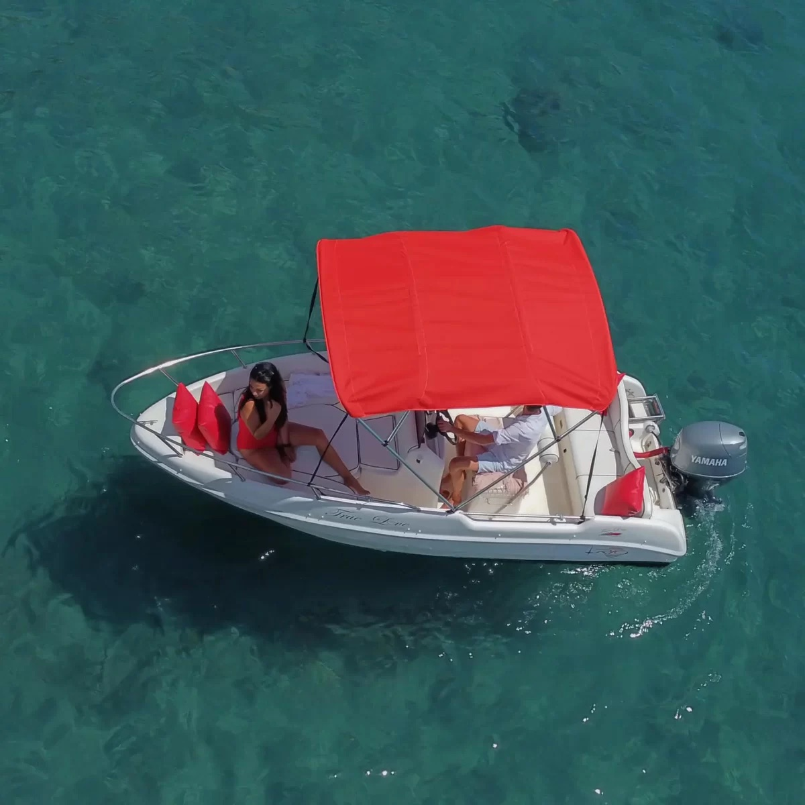
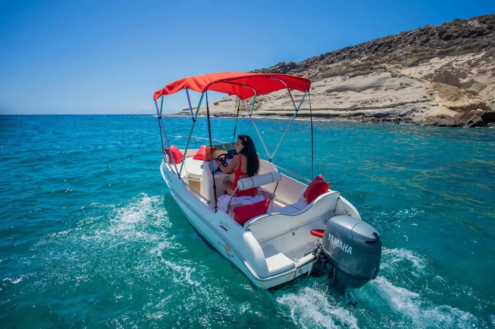
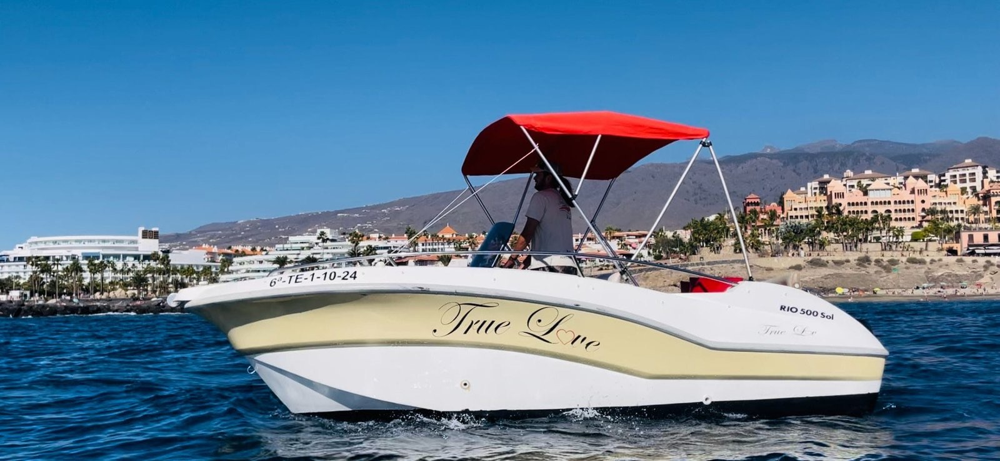
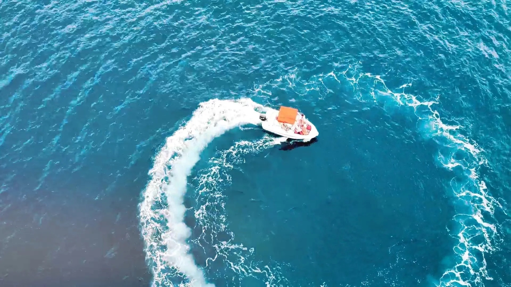
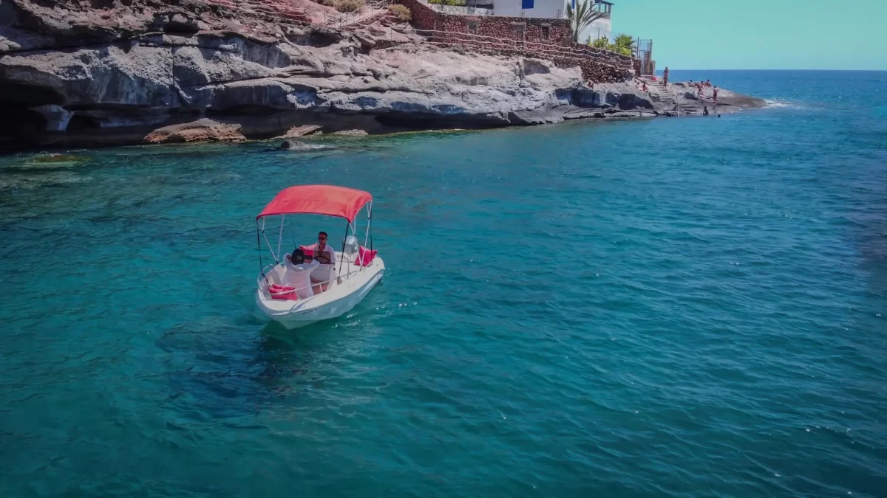
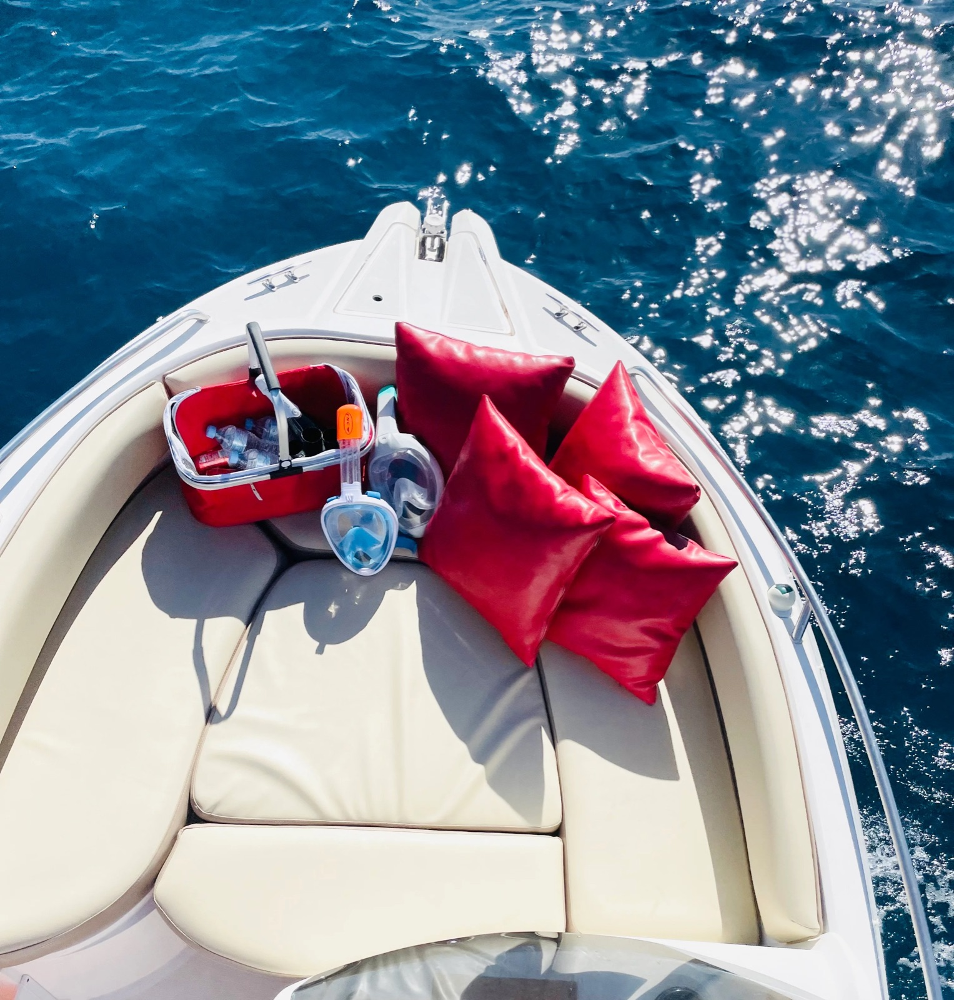
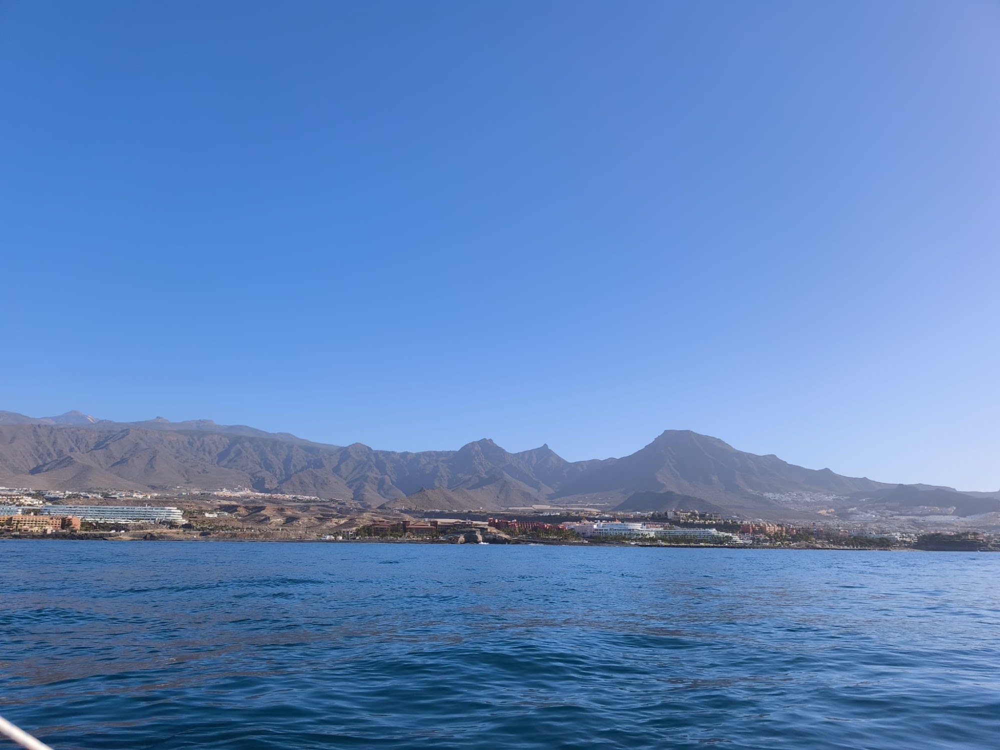
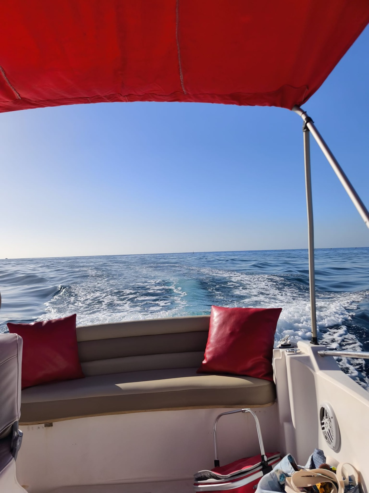
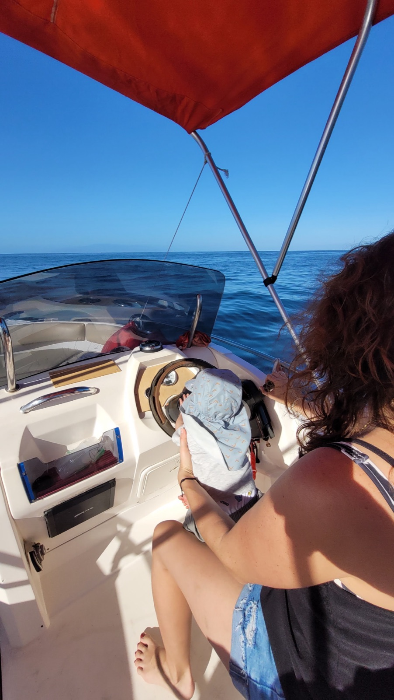
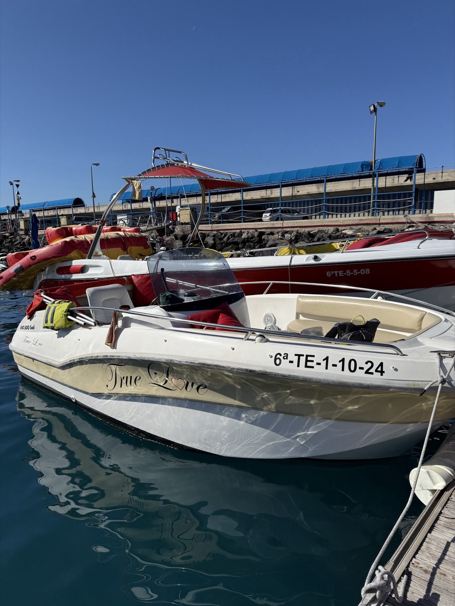

2 Stunden
Zum Reinschnuppern: raus aus dem Hafen, ein Gefühl fürs Steuer bekommen und das erste Bad nehmen.
Ganzes Boot185 €
Buchen
Kennzeichen6ª-TE-1-10-24Boot ohne Führerschein · Puerto Colón, Costa Adeje
★★★★★4,7· 19 Bewertungen bei Google
Ein Boot nur für euch, bis zu fünf Personen, ohne Führerschein. Wir erklären dir alles am Steg, bringen dich aus dem Hafen – und die Küste von Adeje gehört dir.
01 Das Boot
Fünf Meter Rumpf in Weiß und Champagner, Sonnendeck am Bug mit roten Kissen, Bimini für Schatten und ein 15-PS-Motor, der sich fährt wie ein kleines Auto.

02 Preise
Private Miete: Der Preis gilt pro Boot, nicht pro Person, für bis zu fünf an Bord. Wähle die Stunden, wir bestätigen dir die Abfahrtszeit.

Zum Reinschnuppern: raus aus dem Hafen, ein Gefühl fürs Steuer bekommen und das erste Bad nehmen.

Zeit, die Küste entlangzufahren, zum Schnorcheln zu stoppen und ohne Blick auf die Uhr zurückzukommen.

Ein halber Tag auf dem Meer: mehrere Stopps, Essen an Bord, wenn du es mitbringst, und der Nachmittag vor dir.
Schreib uns, wir finden eine Lösung.
Richtpreise laut Triperife (Oktober 2026). Bitte per WhatsApp bestätigen.

03 Routen
Die beliebtesten Stopps, Richtung Nordwesten entlang der Küste von Adeje. Den Kurs bestimmst du – je nach Meer an dem Tag.

04 Direkt buchen

Du schreibst uns direkt: Wir sagen dir, an welchem Tag das Meer am besten ist und wann du am besten startest.
Datum, Stunden und Treffpunkt in ein paar Nachrichten, ohne Formulare oder Anmeldung.
Wenn es nicht sicher ist rauszufahren, schlagen wir dir einen anderen Tag vor.
05 Bewertungen
5★GOOGLEEin toller Tag auf dem Wasser mit der True Love! Das Boot war bequem und lag gut im Meer. Marko, der Besitzer, war herzlich und professionell und sorgte dafür, dass wir einen entspannten Tag hatten – Snacks und Getränke inklusive.(übersetzt)
5★GOOGLEAls wir ankamen, hat Marco uns alles erklärt, mit einer kleinen Willkommensgeste: schön kalte Getränke. Sie bringen dich aus dem Hafen, damit du sicher startest, und danach hat er immer geschaut, ob es uns gut geht […] 100 % empfehlenswert.(übersetzt)
5★GOOGLEDer Besitzer vom Boot war super freundlich und hat uns alles erklärt. […] Wir waren mit unseren 2 Kindern, der Große 4 Jahre und unser Kleiner 8 Monate alt, an Bord. Selbst unser Großer hat das Boot steuern können. […] Wir haben Wasserschildkröten gesehen.
5★GOOGLEAusgezeichnet… ich würde immer wiederkommen. […] Auf dem Boot gibt es Eis, Getränke… alles, um die Insel zu entdecken. Und Marco gibt einem Tipps zu allem.(übersetzt)
06 So funktioniert’s
Sag uns Tag, Stunden und wie viele ihr seid.
Du bekommst die Uhrzeit, wir treffen uns an Steg 3 in Puerto Colón.
Wir erklären die Steuerung, bringen dich aus dem Hafen, und los geht’s.

07 Über uns

True Love ist ein kleiner Betrieb in Puerto Colón mit nur einem Boot – und das merkt man: Dich empfängt Marko, der Besitzer. Er zeigt dir das Boot, erklärt in Ruhe die Steuerung und schleppt dich aus dem Hafen, bevor er dir das Steuer übergibt.
Während du unterwegs bist, behält er dich im Blick, falls du etwas brauchst, und auf Nachfrage verrät er dir, wo man ankert, badet und was es zu sehen gibt. Das wird in den Bewertungen am häufigsten erwähnt.
08 Häufige Fragen
Nein. Die True Love hat einen 15-PS-Motor und darf ohne Bootsführerschein gefahren werden. Wer steuert, muss mindestens 18 sein und Ausweis oder Pass dabeihaben.
Nein. Vor der Abfahrt erklären wir dir Steuerung und Grundregeln und bringen dich aus dem Hafen. Auf dem Meer ist es wie ein kleines Auto zu fahren.
Ja, solange insgesamt nicht mehr als fünf Personen an Bord sind. Es gibt auch Schwimmwesten für Kinder.
Badesachen, Handtuch, Sonnencreme, eine Kappe und deinen Ausweis. Wenn du willst, etwas zu essen: Kalte Getränke sind schon an Bord.
Wenn Wind oder Meer keine sichere Fahrt erlauben, schlagen wir dir einen neuen Termin vor.
Bei Ankunft hinterlegst du eine Kaution, die du am Ende zurückbekommst. Betrag und Zahlungsart bestätigen wir dir per WhatsApp.
09 Abfahrtsort und Zeiten
Puerto Colón, Steg 338660 Costa Adeje, Teneriffa
Sporthafen von Costa Adeje, neben Playa de las Américas. Den genauen Standort schicken wir dir per WhatsApp.
| Montag bis Mittwoch | 9:00–20:00 |
|---|---|
| Donnerstag | Auf Anfrage |
| Freitag bis Sonntag | 9:00–20:00 |
Zeiten laut Google. Die Fahrten werden mit dir abgesprochen.
So würde der WhatsApp-Assistent von True Love antworten. Beispielgespräch.
Was kostet das Boot für 2 Stunden?
185 € für das ganze Boot, bis zu 5 Personen, inklusive Benzin, Schnorchelausrüstung und kalten Getränken.
Ich habe keinen Bootsführerschein – ist das ein Problem?
Gar nicht. Du musst nur mindestens 18 sein und Ausweis oder Pass mitbringen. Wir erklären alles und bringen dich aus dem Hafen. Welcher Tag passt euch?
Designvorschlag für dieses Unternehmen · Nicht die offizielle Website